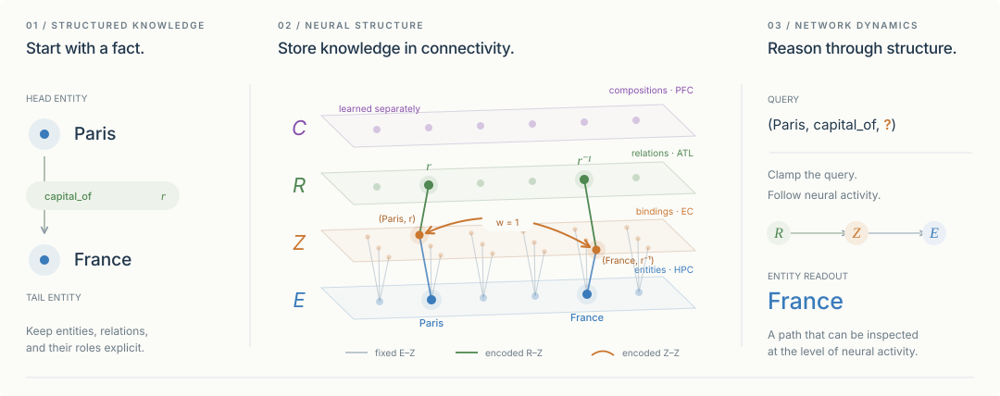
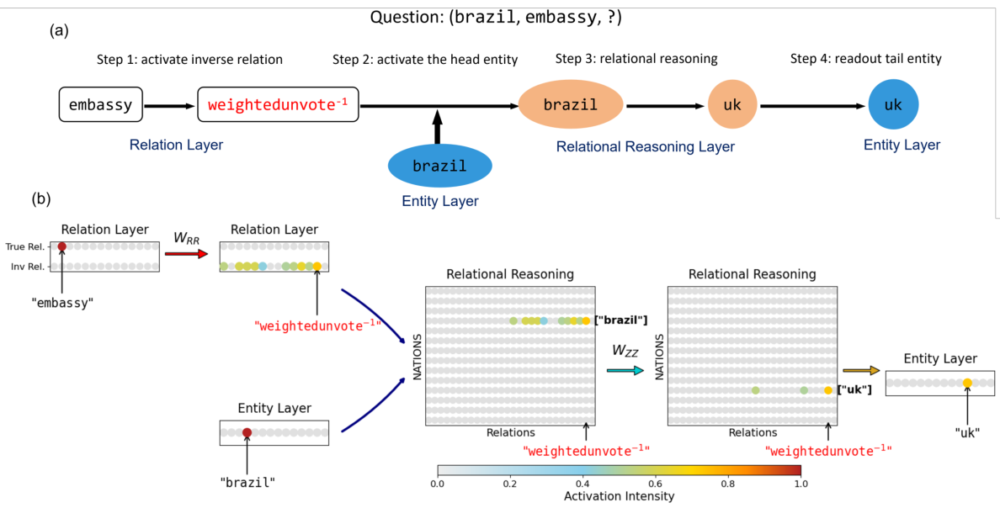
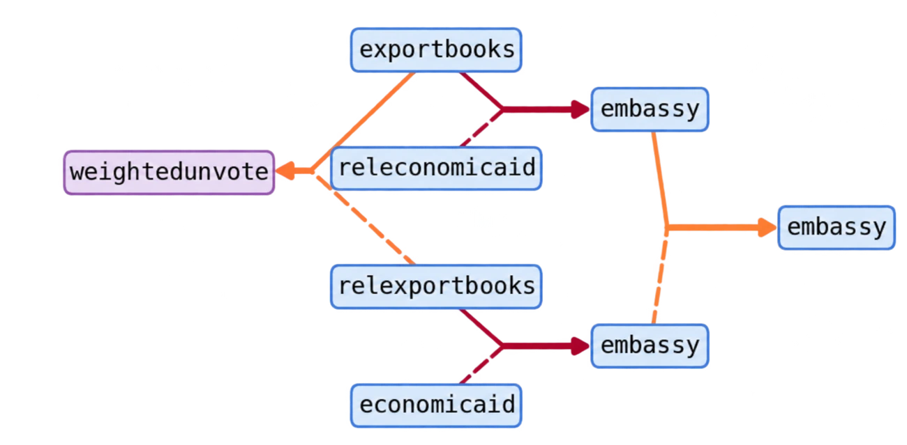

NEURIPS 2026 / POSTER
Neural Structural ReasonerA Brain-inspired Architecture for
Reasoning over Structured Knowledge
Author affiliations
1 Beijing Institute for Brain Research, CAMS & PUMC
2 Chinese Institute for Brain Research, Beijing
3 Beijing Key Laboratory of Brain Science and Brain-Machine Interface
4 Sun Yat-sen University

Abstract
Structural reasoning, the ability to recognize and make inferences over the relational structure between objects and concepts, is a hallmark of human cognition, yet prevailing methods often collapse relational topology into flat embeddings, cannot discover hidden structure and lack interpretability. We introduce Neural Structural Reasoner (NSR), a brain-inspired network that preserves relational structure directly in the connectivity and dynamics of coupled neuronal populations. NSR draws inspiration from three biological mechanisms: multi-layered architecture for encoding hierarchical knowledge, stable representations of entity and concepts, and path integration for input-driven state inference. At query time, NSR parallelizes computation over candidate relational structures and leverages confidence-weighted scores to perform link prediction. Across standard knowledge-graph benchmarks, NSR achieves competitive accuracy without leading on every dataset, and has lower reported training times than several neural baselines. Because reasoning is implemented through sequences of human-readable neuron activations, NSR affords native interpretability by tracking intermediate inference steps. The model further extracts latent relational hierarchies and compositional rules, demonstrating the brain-inspired architecture as an effective, efficient, and highly interpretable substrate for structural reasoning.
Explicit relational structure
Entities, bindings, relations and compositions share one connected architecture.
Reusable associations
Local association learns relation correspondences and compositional structure.
Inspectable reasoning
Intermediate entities and relations remain visible in the network dynamics.
NSR separates entities, directed relations, and relation compositions into four coupled populations. The binding population Z associates each entity with its relational roles; connectivity preserves the structure shared across facts and queries.

- EEntitiesHippocampus · HPC
- A dedicated neuron preserves each entity’s identity across facts.
- ZEntity–relation bindingsEntorhinal cortex · EC
- Relation-indexed binding neurons connect entities to their roles.
- RDirected relationsAnterior temporal lobe · ATL
- Relations and their inverses support retrieval of learned associations.
- CRelation compositionsPrefrontal cortex · PFC
- Learned compositions make multi-step relational patterns reusable.
Encoding a relation triple
Edit (h, r, t), or select a stage to inspect the fixed and fact-encoded connections.
Keep the entities.
The head and tail each have an entity neuron. E–Z connections are already fixed: each entity connects to its own relation-indexed binding neurons.
CCompositions are learned across facts. Single-triple encoding leaves C unchanged.
Illustrative encoding, following §3.2 / Eq. 3. Highlights explain roles; they are not recorded activations. Encoding assigns weights directly—the animation reveals the construction in steps. Read the formulation ↗
Learning and interpretable reasoning
Learning. Hebbian-style association learns correspondences between relations and weights for relation compositions. For static graphs, an accelerated offline procedure computes composition weights from encoded connectivity, without simulating each learning episode.
Inference. A query retrieves associated relations or compositions. Entity-conditioned activity traverses the encoded network to reach candidate tails. Grounded-path support is aggregated using a validation-selected max or sum rule to rank candidates; these scores are not calibrated probabilities.




Accuracy and training efficiency
We evaluate filtered link prediction on Nations, Kinship, YAGO3-10, and FB15k-237. NSR combines competitive, dataset-dependent accuracy with lower reported training times than several neural baselines. The comparison below presents predictive accuracy and training time together; select a dataset or method to inspect the trade-off.
Source: paper Tables 1–2 and author slides 8–9. NSR training times refer to the accelerated implementation for static knowledge graphs (Appendix A.2.1). Reported hardware and protocols differ; ratios are indicative, not hardware-controlled speedups. The horizontal axis uses a logarithmic scale. Models without reported times remain in the table. * denotes a baseline value quoted from prior work or official releases.
Full results for the selected dataset
Evaluation scope and limitations
NSR does not achieve the highest accuracy on these benchmarks, and its training time is not the lowest for every dataset or comparison. Evaluation uses discrete, symbolically specified knowledge graphs. Generalization to noisy, temporal, or perceptual inputs remains open; longer relation chains also pose scaling challenges. See the paper for experimental protocols, implementation details and limitations.
Citation
@misc{jia2026neuralstructuralreasoner,
title={Neural Structural Reasoner: A Brain-inspired Architecture
for Reasoning over Structured Knowledge},
author={Zixing Jia and Yuhang Pan and Ni Ji},
year={2026},
eprint={2609.36620},
archivePrefix={arXiv},
primaryClass={cs.AI},
url={https://arxiv.org/abs/2609.36620}
}